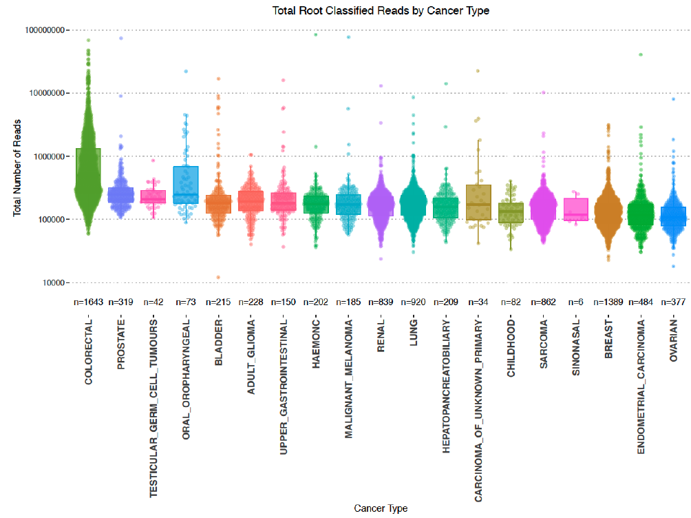
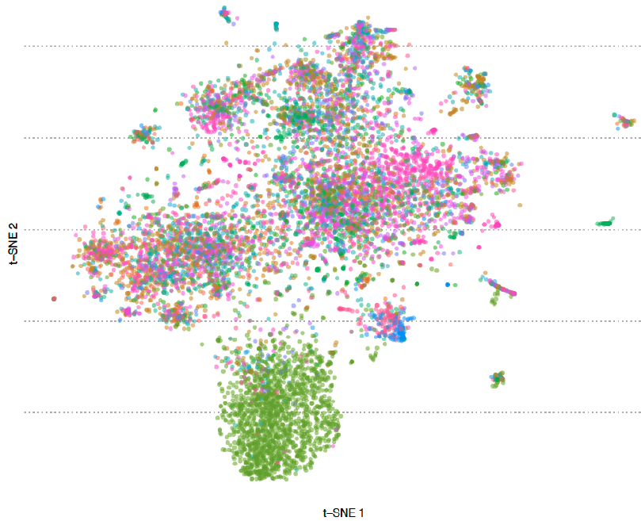
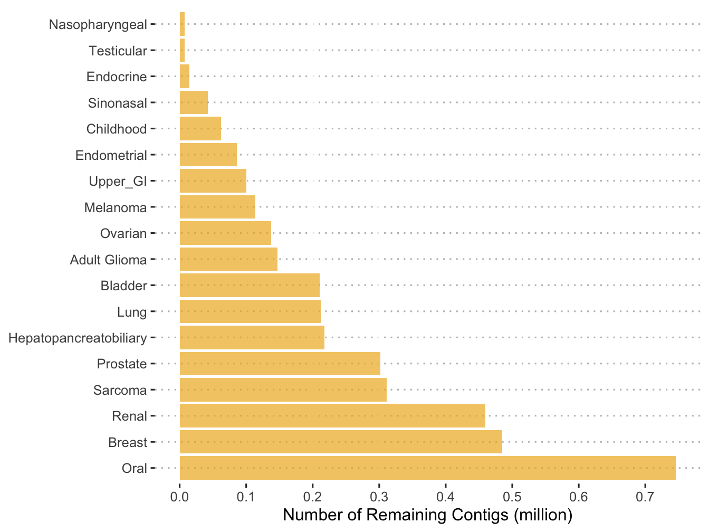
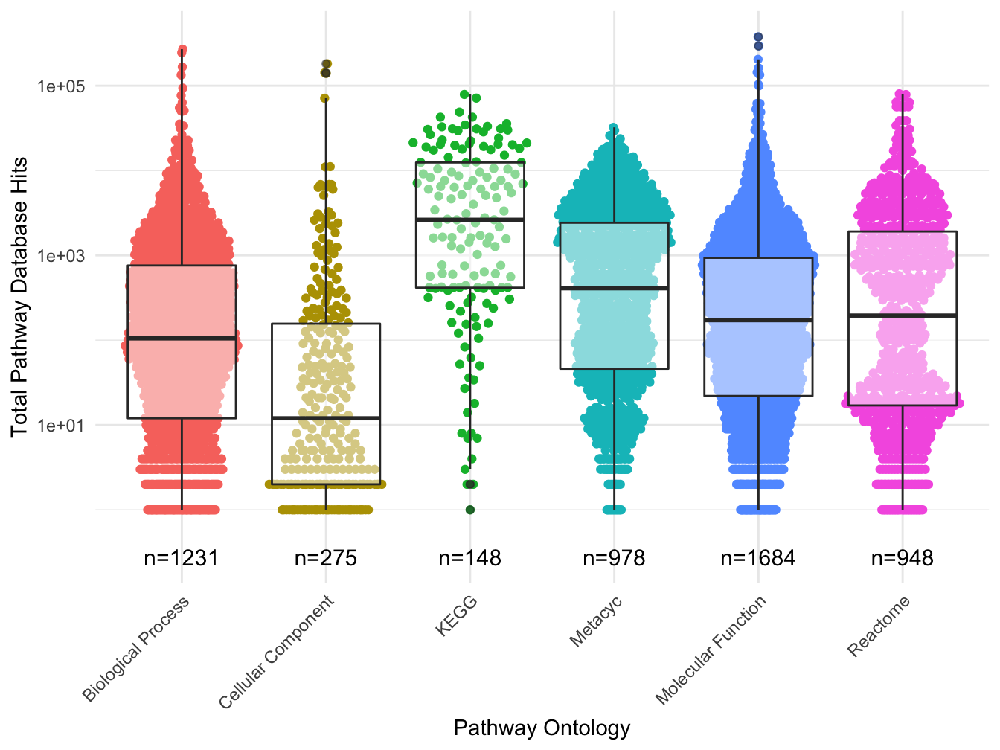

Microbial DNA in Cancer Sequence Data
Gihawi, A. 1, 
@AbrahamGihawi
A.Gihawi@uea.ac.uk
Hurst, R.1 Leggett, R.M.2 Cooper, C.S.1 Brewer, D.S.1,2 Genomics England Research Consortium3
1 Bob Champion Research and Education Building, University of East Anglia, Norwich, UK
2 Earlham Institute, Norwich, UK
3 Genomics England, London, UK
Background
The role of Helicobacter pylori[1] and Human papillomavirus[2] in gastric and cervical cancer are testament to the prominent role that pathogens can play in cancer. When submitting tumours to whole genome sequencing, it is possible to indicentally sequence microbes in close proximity[3]. We have been using the 100,000 Genomes Project as a rich resource to search for evidence of microbial DNA.
We benchmarked software to devise the best approach for cancer whole genome sequence metagenomics. The top performing approaches are provided in a tool called SEPATH [4] which performs the following:
- Extracts unmapped reads from BAM files
- Quality trimming & human read depletion
- Metagenomic classification with Kraken[5]
Additionally, we have also been investigating the taxonomy and functional potential of contigs produced by metagenomic assembly.
Methods
Non-human reads were extracted and classified using SEPATH. Classifications from PCR-free, fresh-frozen samples (N=7,775) with \(<20\) reads were filtered. Taxa were removed according to published ‘black lists’ of common contaminants[6]. Ordination was carried out with Rtsne (perplexity=90, max_iter=2,000) on a matrix of Spearman’s distances created with the ClassDiscovery package.
Metagenomic assembly was carried out on non-human reads pooled by cancer type with MEGAHIT[7]. Taxonomic classifications of contigs were obtained with DIAMOND[8] with NCBI non-redundant proteins.
Functional potential of putative proteins was estimated using Prokka[9] and InterProScan[10].
SEPATH Results
Colorectal and oral cancers demonstrate the greatest median number of microbial reads. A background number of classified reads exists throughout all cancer types.

Figure 1: Microbial reads in each tumour type
Colorectal and Oral Cancers Show Distinctive Microbial Communities

Figure 2: t-SNE plot of cancer samples using Spearman’s distance coloured by tumour type. Colorectal and oral cancer are shown in green and blue respectively and separate out into clusters in the bottom half of the plot. This plot was produced using a reduced set of 652/1534 genera.
Assembly Results
Assembling microbial reads within each tumour type has resulted in a total of 17.8 million contigs. The number of contigs produced by each cancer type was positively correlated with the number of reads submitted to each assembly (Spearman’s \(\rho = 0.87\))

Figure 3: The number of contigs in each assembly after removing mammalian and common contaminant genera. Colorectal samples were excluded due to being prohibitively large to assemble as one pool
Functional Results
5,264 different pathways were reported across all ontologies, representing ~10% of all known metabolic pathways. This data has been made available via: https://UEA-Cancer-Genetics-Lab.github.io/Pancancer_Microbial_Pathways/.
This has suggested some tantalising pathways for future research such as “PD-L1 expression and PD-1 checkpoint pathway in cancer”
It is hoped that this resource can provide researchers with an additional strand of evidence for a non-human pathway existing in cancer.
The number of pathway hits was correlated with the number of assembled contigs (Spearman’s \(\rho = 0.92\)) and is therefore sensitive to the sample size. For this reason it is not advisable to investigate differences between cancer types.

Figure 4: The distribution of pathway hits within all cancer types across all ontologies. The number of pathways for each ontology is demonstrated on the x-axis
Conclusions
SEPATH suggests limited pancancer microbial structure.
This may be caused by inbalances in reference genomes available.
Metagenomic assembly is a reference-independent approach that may reveal more about pancancer microbial structure.
All metabolic pathways reported have been made available for researchers.
This resource should be used for hypothesis generation or as preliminary evidence for a pathway in cancer.
Ongoing Tasks
The technical difficulties of assembling colorectal data has been circumvented by dividing the pooled reads into six sets. In order to fairly compare cancer types, a single database must be created. To do this, we have concatenated all assembled contigs which contains >18 million contigs. To reduce this database and remove redundancy we have selected representative sequences by clustering with CD-HIT[11] which has removed 8 million contigs. Each sample is currently being pseudo-aligned to this pancancer database with Kallisto[12].
Acknowledgements
This poster was created in posterdown and the code to do so is available on GitHub
Thanks to Genomics England including participants and staff as well as Big C and Prostate Cancer UK for supporting this project.
References
1. Plummer M, Martel C de, Vignat J, Ferlay J, Bray F, Franceschi S. Global burden of cancers attributable to infections in 2012: A synthetic analysis. The Lancet Global Health. 2016;4:e609–16.
2. Hibbitts S, Tristram A, Beer H, McRea J, Rose B, Hauke A, et al. UK population based study to predict impact of hpv vaccination. J Clin Virol. 2014;59:109–14. doi:10.1016/j.jcv.2013.12.002.
3. Magiorkinis G, Matthews PC, Wallace SE, Jeffery K, Dunbar K, Tedder R, et al. Potential for diagnosis of infectious disease from the 100,000 genomes project metagenomic dataset: Recommendations for reporting results. Wellcome Open Research. 2019;4.
4. Gihawi A, Rallapalli G, Hurst R, Cooper CS, Leggett RM, Brewer DS. SEPATH: Benchmarking the search for pathogens in human tissue whole genome sequence data leads to template pipelines. Genome Biol. 2019;20:208. doi:10.1186/s13059-019-1819-8.
5. Wood D, Salzberg S. Kraken - ultrafast metagenomic sequence classification using exact alignments. Genome Biol. 2014;15.
6. Eisenhofer R, Minich JJ, Marotz C, Cooper A, Knight R, Weyrich LS. Contamination in low microbial biomass microbiome studies: Issues and recommendations. Trends in Microbiology. 2019;27:105–17. doi:10.1016/j.tim.2018.11.003.
7. Li D, Liu CM, Luo R, Sadakane K, Lam TW. MEGAHIT: An ultra-fast single-node solution for large and complex metagenomics assembly via succinct de bruijn graph. Bioinformatics. 2015;31:1674–6. doi:10.1093/bioinformatics/btv033.
8. Buchfink B, Xie C, Huson DH. Fast and sensitive protein alignment using diamond. Nature Methods. 2015;12:59–60.
9. Seemann T. Prokka: Rapid prokaryotic genome annotation. Bioinformatics. 2014;30:2068–9. doi:10.1093/bioinformatics/btu153.
10. Jones P, Binns D, Chang H-Y, Fraser M, Li W, McAnulla C, et al. InterProScan 5: Genome-scale protein function classification. Bioinformatics. 2014;30:1236–40. doi:10.1093/bioinformatics/btu031.
11. Li W, Godzik A. Cd-hit: A fast program for clustering and comparing large sets of protein or nucleotide sequences. Bioinformatics. 2006;22:1658–9. doi:10.1093/bioinformatics/btl158.
12. Bray NL, Pimentel H, Melsted P, Pachter L. Near-optimal probabilistic RNA-seq quantification. Nature Biotechnology. 2016;34:525–7. doi:10.1038/nbt.3519.